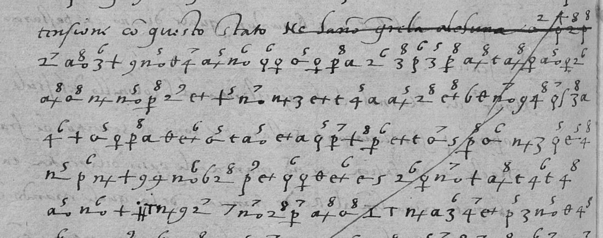

01 The letter and the key
The four DECODE images are out of archive order. P4 is f. 110r (scan 0408) and opens “Sacra Cat.ca & Ces.a M.ta”. It is in clear, on the Dauphin and the Grand Master crossing with munitions, the King at Briançon, and “Mons.or di Marnol” with the Colonel of the Isola working to recall the Swiss in French service. P1 is f. 110v (scan 0409), with clear text on the Grisons and then the eleven cipher lines. P3 is f. 111r (scan 0410). It has one cipher line struck through, then the clear close, dated “In M.lo ali xiiij de Nov.e M. D. xxxvij” and signed “il Car.l Caracciolo”. P2 is the address leaf, with the docket “del Cardenal Caracciolo xiiij de Nov.e 1537”.
Cifrario 38 (Luo 2021, p. 657, from AGS Estado leg. 38 doc. 190) has three parts.
- An alphabet of invented signs with homophones. a has six signs, and e, i, l, n, o, p and u have two to four each.
- A syllabary. A consonant’s base sign takes a superscript digit for the vowel: 5 = a, 6 = e, 7 = i, 8 = o, 9 = u. For example, 2 is the base for s, so 2⁷ = si.
- Nulls, marked by the superscripts 2, 3 and 4, and a few code words.
The first cipher line shows the system at work: 2⁷ a̱o⁸ 3⁶ + 9 ṉo⁵ θ 4⁷ a+⁵ ṉo⁶ = si do ve a p ra c ti ca re.

02 The reading
Line by line, as the cipher spells it. [..] marks signs not resolved, and square brackets around words mark a doubtful reading.
1 [so lo] si dovea practicare per Marno a se volevano concordarse 2 como erano Suizari, et in tal caso ho scripto piu vol- 3 te a Marno a che manda il Panizone in mio nome et pagato 4 quale a fe[?] resolui, perche io se[..]ri contento 5 dare a epsi Grisoni a Como [..] tracta 6 de l'[..]rumento gratis, facendo capituli convenienti. 7 Fin qui a epso Marno a[..] non e passo per dicti Griso- 8 ni; ha [pri a no l] facto como Suizari. Epso Marno a 9 se accorge hora de la malignita et perfidia de 10 Suiza[..] et ma[..] et soi ministri. Se deve [non] recor- 11 dare e quan[to ..] [..] che epsi Suizari [..]
In substance, Caracciolo explains how Marnol was to be used. He was to find out whether the Grisons would come to terms as the Swiss had. Caracciolo had written to him several times to send Panizone in Caracciolo’s name and to pay him. The Grisons at Como were to be offered terms at no cost, “facendo capituli convenienti”. So far Marnol had obtained no passage from them. He now saw the malice and bad faith of the Swiss and their ministers.
03 Prior work and method
Tomokiyo’s page on the Spanish ciphers of Charles V, in its section on Luo’s thesis, names the key and reads lines 1–4 roughly (“… pagabo quale e a e f ressolvi perche io se r ri a conbento”). That note was found before the work and led to the key. Here the letter was deciphered line by line from the DECODE images, and the key needed no change. Line 3 reads pagato and line 4 contento, where Tomokiyo had pagabo and conbento. Luo’s thesis does not edit this letter.
04 What remains uncertain
- Line 4: a fe is literal (9 = f, hooked 9 = e) and its sense is doubtful; the middle of se[..]ri is open.
- Line 5: the dotted sign after dare a is a null (settled on retry); the word before tracta is open.
- Line 6: the first signs of [..]rumento, crossed by the cancelling stroke.
- Line 8: the segmentation of ha [pri a no l] facto.
- Lines 10–11: Suiza[..], ma[..], quan[to ..] and the end of line 11.
- The cancelled line at the top of f. 111r, struck through by the writer and full of nulls, is not read.
The reading was made directly from the images, without a separate sign transcription. A transcription sign by sign, at higher magnification, was tried on the gap spots at 4× with contrast; it settled lines 4 and 5; lines 8it settled lines 4 and 5 and left the rest.ndash;11 were not re-cropped.
05 Sources
- Archivo General de Simancas, Estado leg. 1184 fol. 110, scans 0408–0411: DECODE R9966 (login).
- Wanruo Luo, El lenguaje cifrado de Isabel de Portugal (1530–1539), doctoral thesis, Universitat de València, 2021 (RODERIC), Cifrario 38, p. 657.
- Satoshi Tomokiyo, cryptiana.web.fc2.com, “Spanish ciphers during the reign of Charles V”, section on Luo (2021).
Notes, reading and profile: caracciolo1537/ in the repository.